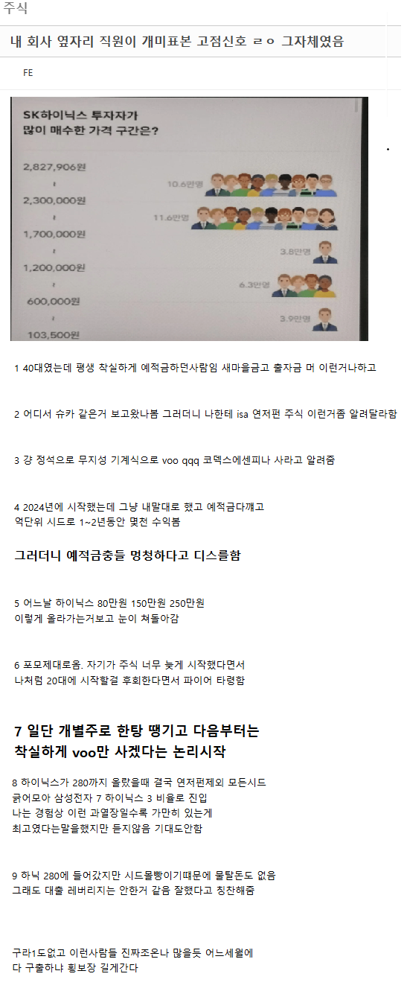

고점신호 그자체였다는 회사옆자리 직원
댓글
그때 현금비중 얼마까지가져감?
안오른건 안빼고 유지하고 반도체쪽은 10% 정도 남을 때까지 계속 절반씩 팔았던거 같음
러닝하는데 할매 할배들 운동장 돌면서 주식강의 듣길래 절반 팔았지
나도 개붕이들이 포모 씨게 와서 드갈까 말까 할 때 하닉 팜
10만~150만 구간은 예전부터 짬짬이 주식하던 사람들 구간인데, 170~280만 구간은 주식의 주 짜도 모르면서 예적금만 하던 사람들이 뉴스지인유튜브보고 올인하는 경우가 많아서 (특히 200 밑은 약간 간만 보다가 200 넘어서 올인) 물린 사람들의 금액이 어마어마할거임.
난 솔직히 200에서 팔까했는데 그때 모든 사람이 삼닉을 얘기하길래 참았다가 300전날에 팔아버림 그땐 오르면 안되고 오를수도 없는데 왜사나 싶었음...
그래도 연저펀은 남겼네
연저펀은 세금 왕창 뜯기거든 ㅋㅋ
오래했으면 잘 알겠네 그렇게 쳐물린놈들도 다 구출해주는게 주식시장이다
뭐 시체가많이 쌓인돈이 어마어마하니 개 부질없는소리
급등하면 매도걸어놓은 시체들도 갑자기 매도취소함ㅋㅋ
???: 구조대 와주셔서 너무 감사한데요.. 생각이 바뀌었어요
국장은 안와ㅜㅜ
그나마 삼전, 하닉은 올 수도.
그만큼 현금 값어치가 녹는거야 ㅋㅋㅋ
예체능계열인데 사석에서 선후배 주식얘기 나오길래 엥간한거 다 팔고 채권에 넣었음
선후배들 넘 무시하는거 아니냐ㅋㅋㅋㅋㅋ
난 20일때 들어갔다가 32일때 빠졌는데....
내친구는 80에 들어갔다가 89에 나왔다고 했음
근데 시드가 500정도라 별로 못벌었음 둘다... 용돈으로 꽁짓돈 돌린거라 지금도 500정도 굴림 손해... 는 거의 안봤고
1년 수익률 대충 20%정도 됨 500넣어서 100만원 정도 버는거지 뭐
그렇게 100씩 벌어서 그걸로 맛있는거 먹거나 필요한거 사거나 함 작년초엔 메모리 업글하고 글카 업글하고 키보드랑 모니터 샀음
재투자는 될 수 있으면 안함 시드머니 늘어나면 욕심 생겨서 엉뚱한 짓 할거 뻔해서...
컴터 맞춘게 제일 부럽습니다...이젠 맞추려해도.....ㅠㅠㅠㅠㅠㅠㅠ
S&P500은 꿈쩍도 안 한 게 함정이지
언제 하락장 오냐 ㅅㅂ
정확하게 285 30에 빠졌음 그때 코인 9200에 탔고
아니 옆집 뽀삐도 주식 이야기 하는데 튀어야한다니까 코인 불장때랑 똑같음
젊은사람은 우량주 정도는 물려도 상관없음 월급 탈때마다 물타면 되는거고 아니면 잊고 살면됨 10년정도 지나면 자기 자리 와있음 ㅋㅋ 탈출할지 말지는 자기 몫이긴 하지만
ㅋㅋ 예적금충들 멍청하다고 비난했으면 지도 처먹어야지 뭐
탈출 언젠간 하시겠죠 하면서
터지기 전에 현금화하고 들고있다가
지금 달러 떨어지는거 잘 봐서 잡으면 최고인데
한미반도체 제발 살려주세요
지금 꼬라지보면 박스피 진입한거같은데 탈출하려면 한참 걸릴듯 ㅋㅋ
전업, 파이어 어쩌고를 입에 달고 사는 애들은 결국 박살나더라. 과학임 ㅋㅋ
냅뚜믄오른다
가만보면 주식이란게 심리학에 더 가까운 거 같기도 함
어느날 은행갔는데 할머니가 딸이랑 스피커폰으로 통화하는데, 딸이 웃으면서 "엄마 내가 하이닉스로 잘 굴려서 돈벌어줄게" 이러면서 웃음 소리 들리는데 그때가 하락하다 살짝 반등왔던 230인가였음 그후 바로 귀신같이 빠지기 시작하더라.
2010년도 차화정 호황 때 물린 사람들 10년 뒤에 코로나 찬스 오고서야 겨우 탈출했는데 ㅋㅋㅋㅋㅋㅋㅋ
주위 직원 한명이 주식한지 몇년 안되는데 전업 가능할거 같다는 이야기 함
그 소리 듣고 그 날 이후로 주식 매도하고 현금비중 늘렸더니 결국 국장 터지드라